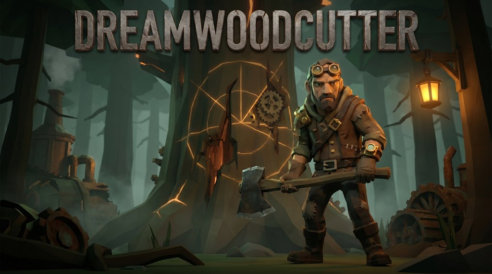

LED Volume · UE5 · Pipeline
Virtual Production · CG · VFX · Unreal Engine 5 · Generative AI
Anton Danilov
Senior CG artist and Virtual Production specialist. Twenty years of games, advertising and broadcast, now routed into one pipeline: real-time, in camera.
20+years in CG and VFX
6.5years leading Virtual Production
Tallinnremote, worldwide
Inputs · 2001 → now
Output
Output · Final pixel in camera
Virtual Production
Built the VP department at Gorodenkoff Productions from first LED volume tests to work for major European advertising clients.
Watch the VP showreelShowreels & Projects
Three reels, one for each part of the pipeline, and a game I built solo in Unreal Engine 5.
Game Assets · 3D · Environments
3D Games, Weapons & Worlds
VFX · Compositing · Advertising
VFX & Compositing Showreel

Indie game · Solo dev · 2026
DreamWoodCutter
An atmospheric lumberjack sim built solo in Unreal Engine 5: sector-based tree physics, a stamina system, procedural wind and spatial audio. The demo is playable.
Download on itch.ioProfile
I built and led the Virtual Production department at Gorodenkoff Productions in Tallinn, taking the studio from its first LED volume tests to work for major European advertising clients.
Over nearly seven years I developed the full technical pipeline in Unreal Engine 5, trained and mentored the team, and made VP a core part of the studio's offer.
Before that I spent years making game assets at Ringtail Studios, worked as a 3D artist and compositor at CG Company (Moscow) and Vilks Postproduction (Riga), and contributed to advertising campaigns at Leo Burnett Kontuur and other agencies.
I also teach: courses in 3D, Unreal Engine and AI video for adults in Tallinn (site in Russian).
Based in Tallinn, Estonia, available for remote collaboration worldwide.
Expertise
- Virtual Production
- Unreal Engine 5
- Niagara VFX
- Real-time VFX
- 3D Modelling
- CG Compositing
- Lighting & Rendering
- Generative AI · ComfyUI
- Blender
- DaVinci Resolve
- After Effects
- Pipeline Building
- Team Mentoring
Career
-
Sep 2019 — Mar 2026
Chief Virtual Production Artist
Gorodenkoff Productions · Tallinn, Estonia
Built and led the VP department from scratch. Developed the full UE5 pipeline, trained the team, delivered high-end commercial projects for major European clients.
-
Dec 2013 — May 2019
3D Artist & Compositor
CG Company · Moscow, Russia
High-end CG production for advertising and broadcast: 3D, compositing and rendering across major campaigns.
-
Sep 2012 — Sep 2013
CG Generalist & Compositor
Vilks Postproduction · Riga, Latvia
Post-production for advertising clients across the Baltic region.
-
2006 — 2012
3D Artist, Advertising Production
Motion Studios, Leo Burnett Kontuur and others · Tallinn
3D and compositing for top advertising agencies in Estonia.
-
2001 — 2006
3D Artist, Game Assets
Ringtail Studios · Tallinn, Estonia
Game assets for international studios over five years. Credits include Alan Wake (Remedy Entertainment).
Let's work together
Open to full-time, contract and freelance projects, remote worldwide or on site in the Baltics and Finland.